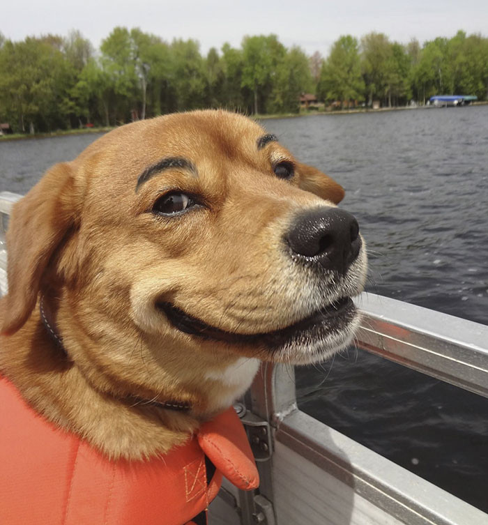

The Lorax by Dr. Seuss is about a man called the Once-ler who cuts down Truffula trees to make a product called a Thneed. The Lorax, who speaks for the trees, warns him that cutting them down will harm the environment and animals. The Once-ler doesn’t listen, and eventually all the trees are gone and the animals leave. In the end, he gives a boy the last seed and says the environment can only be saved if someone truly cares.
